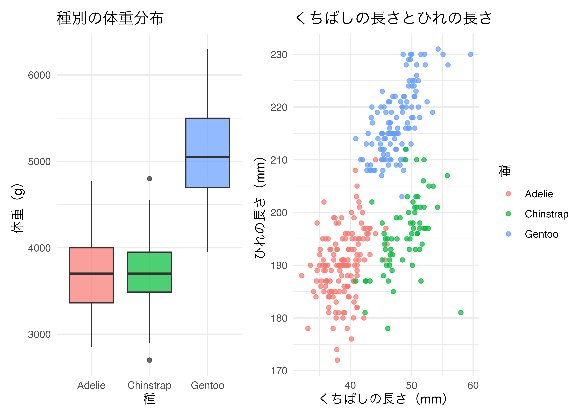
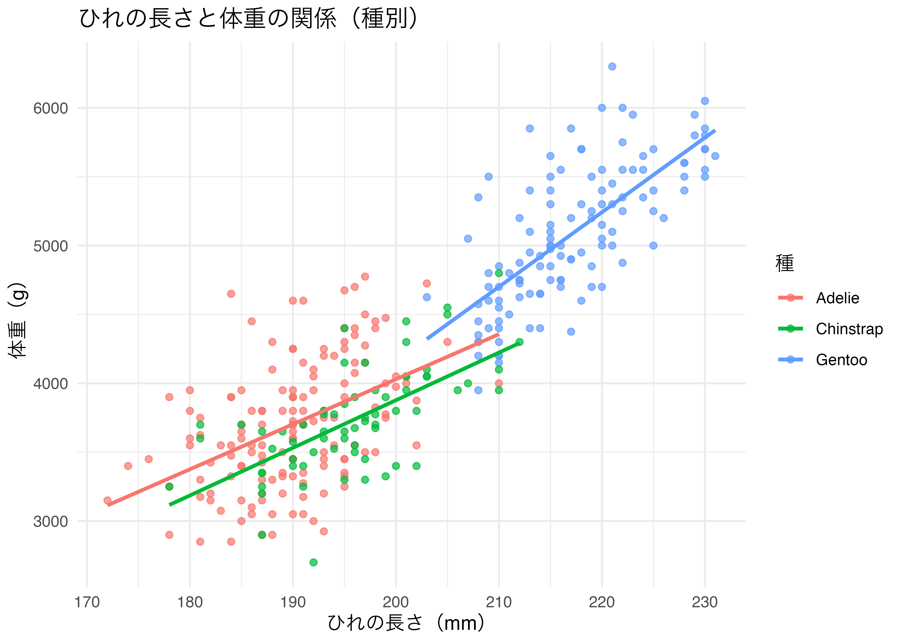
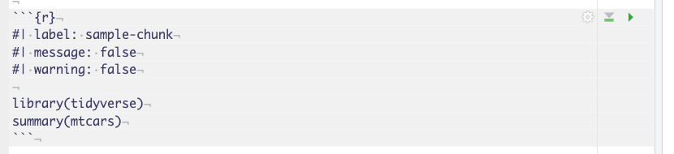

13 総合演習
データ分析の流れを一通り体験する
今日の目標
- 「問い（RQ）・仮説→データの確認・前処理→記述統計→可視化→分析（相関・回帰）→考察」という分析の流れを、自分の手で一通り経験する。
- 与えられたデータセットから自分で問い（テーマ）を設定し、分析を進められるようになる。
- 期末レポート（独自のデータ分析）に向けて、レポートの構成・書き方の「型」を身につける。
今日の位置づけ
本日は、期末レポート（独自のデータ分析結果を提出）に向けた練習回です。期末レポートでは、教員が配布するデータセット（1〜2つ）に加えて、自分で探してきたデータセットも組み合わせて分析してもらいます。
本日はまず、扱いやすいデータセットを一つ使い、分析の「型」――問いの立て方から結論の書き方まで――を身につけることに集中しましょう。
13.1 パッケージの準備
大学の PC はシャットダウンするたびに初期化されるため、毎回インストールが必要です。
必要なパッケージを読み込みます。
13.2 今日使うデータ
南極・パーマー諸島のペンギンデータ（penguins、palmerpenguins パッケージに内蔵）
アデリーペンギン・ヒゲペンギン・ジェンツーペンギンの3種について、体のサイズや生息する島などが記録されたデータです。行数・変数ともに少なく、欠損値もわずかなため、「分析の流れ」の練習に適しています。
Rows: 344
Columns: 8
$ species <fct> Adelie, Adelie, Adelie, Adelie, Adelie, Adelie, Adel…
$ island <fct> Torgersen, Torgersen, Torgersen, Torgersen, Torgerse…
$ bill_length_mm <dbl> 39.1, 39.5, 40.3, NA, 36.7, 39.3, 38.9, 39.2, 34.1, …
$ bill_depth_mm <dbl> 18.7, 17.4, 18.0, NA, 19.3, 20.6, 17.8, 19.6, 18.1, …
$ flipper_length_mm <int> 181, 186, 195, NA, 193, 190, 181, 195, 193, 190, 186…
$ body_mass_g <int> 3750, 3800, 3250, NA, 3450, 3650, 3625, 4675, 3475, …
$ sex <fct> male, female, female, NA, female, male, female, male…
$ year <int> 2007, 2007, 2007, 2007, 2007, 2007, 2007, 2007, 2007…主な変数
| 変数名 | 内容 | 種類 |
|---|---|---|
species |
種（Adelie / Chinstrap / Gentoo） | カテゴリ |
island |
生息する島（Biscoe / Dream / Torgersen） | カテゴリ |
bill_length_mm |
くちばしの長さ（mm） | 数値 |
bill_depth_mm |
くちばしの厚さ（mm） | 数値 |
flipper_length_mm |
ひれ（フリッパー）の長さ（mm） | 数値 |
body_mass_g |
体重（g） | 数値 |
sex |
性別（male / female） | カテゴリ |
year |
観測年 | 数値 |
（出典：Horst, Hill, Gorman (2020) palmerpenguins R package。原データは Dr. Kristen Gorman と Palmer Station LTER による収集）
sex の一部に欠損値（NA）が含まれています。分析前に drop_na() で除外するか、分析ごとに na.rm = TRUE を指定してください。
13.3 分析の流れ
今日は、以下の5つのステップに沿って分析を進めます。この流れは、期末レポートでもそのまま使えます。
- 問い（RQ）と仮説を立てる
- データの確認・前処理と記述統計
- 可視化
- 分析（相関 or 回帰）
- 考察・結論
13.3.1 ステップ1：問い（Research Question）と仮説を立てる
分析は「とりあえずグラフを描く」ことから始めるのではなく、何を明らかにしたいかを先に決めることが重要です。良い問いの条件は以下の3つです。
- 具体的な変数を指定できている（漠然としていない）
- データで答えられる（データに含まれる変数で検証可能）
- 比較・関係の視点が入っている（差があるか／関係があるか）
問いの例
- 種（species）によって、体重（body_mass_g）に差はあるか？
- くちばしの長さ（bill_length_mm）とひれの長さ（flipper_length_mm）には関係があるか？
- ひれの長さが体重に与える影響は、性別によって異なるか？（交差項）
- 島（island）ごとに、くちばしの形（長さ・厚さ）に違いはあるか？
仮説を立てる
問いを立てたら、次に「おそらくこうなっているのではないか」という仮説を先に言葉にしておきましょう。分析結果を見る前に仮説を書いておくことで、結果を都合よく後付けで解釈してしまうことを防げます。
- 問い：種（species）によって、体重に差はあるか？
- 仮説：ジェンツーペンギンは体が大きいため、他の2種より体重が重いと予想される。
- 問い：くちばしの長さとひれの長さには関係があるか？
- 仮説：体全体が大きい個体ほど、くちばしもひれも長くなると考えられるため、正の相関があると予想される。
やってみよう
上の例を参考に、自分なりの問いを1つと、その問いに対する仮説を書き出してください。この段階では仮のもので構いません（ステップ2〜4を進める中で、データに合わせて修正して構いません）。
例
以下では、ステップ2〜5を通して、次の問い・仮説を一貫した例として使います。
- 問い：ひれの長さ（flipper_length_mm）は体重（body_mass_g）に影響を与えるか。また、その影響は種（species）によって異なるか。
- 仮説：ひれが長い個体ほど体重は重くなると考えられる。特に、体格の大きいジェンツーペンギンでは、その関係がより強く現れるのではないか。
13.3.2 ステップ2：データの確認・前処理と記述統計
前処理：欠損値・データ形式の確認
記述統計や可視化に進む前に、必ずデータの状態を確認しておきましょう。特に欠損値（NA）の有無・件数と、各列のデータ型（数値かカテゴリか）は最初に確認すべき項目です。
species island bill_length_mm bill_depth_mm
0 0 2 2
flipper_length_mm body_mass_g sex year
2 2 11 0 今回は drop_na() で欠損値を含む行をまとめて除外していますが、実際の分析では「除外してよい欠損か」「除外すると分析結果が偏らないか」を考える必要があります。期末レポートで自分の見つけたデータを使う際は、この前処理に特に時間がかかることが多いので注意しましょう。
記述統計
前処理を終えたデータについて、問いに関係する変数の全体像を数値で把握します。
# A tibble: 3 × 4
species n mean_mass sd_mass
<fct> <int> <dbl> <dbl>
1 Adelie 146 3706. 459.
2 Chinstrap 68 3733. 384.
3 Gentoo 119 5092. 501.やってみよう
island（島）ごとに、bill_length_mm（くちばしの長さ）の記述統計量（件数・平均・標準偏差）を計算してください。
例
問い（ひれの長さと体重の関係）に沿って、種ごとにひれの長さと体重の記述統計量を計算します。
# A tibble: 3 × 6
species n mean_flipper sd_flipper mean_mass sd_mass
<fct> <int> <dbl> <dbl> <dbl> <dbl>
1 Adelie 146 190. 6.52 3706. 459.
2 Chinstrap 68 196. 7.13 3733. 384.
3 Gentoo 119 217. 6.59 5092. 501.ジェンツーは、ひれの長さ（平均約217mm）・体重（平均約5092g）ともに、アデリー・ヒゲペンギンより明らかに大きいことが分かります。
13.3.3 ステップ3：可視化
数値だけでは見えにくいパターンを、グラフで確認します。
p1 <- df_penguins |>
ggplot(aes(x = species, y = body_mass_g, fill = species)) +
geom_boxplot(alpha = 0.7) +
labs(title = "種別の体重分布", x = "種", y = "体重（g）") +
theme_minimal() +
theme(legend.position = "none")
p2 <- df_penguins |>
ggplot(aes(x = bill_length_mm, y = flipper_length_mm, color = species)) +
geom_point(alpha = 0.7) +
labs(title = "くちばしの長さとひれの長さ",
x = "くちばしの長さ（mm）", y = "ひれの長さ（mm）", color = "種") +
theme_minimal()
p1 + p2
やってみよう
自分の問いに関係する変数を選び、適切なグラフ（棒グラフ・箱ひげ図・散布図など）を1つ以上描いてください。geom_point() を使う場合は、color = や facet_wrap() でグループ（species や sex など）を区別してみましょう。
例
ひれの長さと体重の関係を、種ごとに色分けして散布図で確認します。

種を問わず、ひれの長さと体重の間には右肩上がりの関係が見られます。また、ジェンツーは他の2種と分布がはっきり分かれており、同程度のひれの長さでも体重が重い傾向がありそうです。
13.3.4 ステップ4：分析（相関・回帰）
問いの内容に応じて、相関分析または回帰分析を行います。
2変数の関係を調べたい場合（相関分析）
Pearson's product-moment correlation
data: df_penguins$bill_length_mm and df_penguins$flipper_length_mm
t = 15.691, df = 331, p-value < 2.2e-16
alternative hypothesis: true correlation is not equal to 0
95 percent confidence interval:
0.5868092 0.7106869
sample estimates:
cor
0.6530956 要因の影響を調べたい場合（回帰分析）
| 種を統制 | 性別との交差項 | |
|---|---|---|
| + p < 0.1, * p < 0.05, ** p < 0.01, *** p < 0.001 | ||
| (Intercept) | -4013.179*** | -5443.961*** |
| (586.246) | (440.283) | |
| flipper_length_mm | 40.606*** | 47.153*** |
| (3.080) | (2.226) | |
| speciesChinstrap | -205.375*** | |
| (57.566) | ||
| speciesGentoo | 284.524** | |
| (95.430) | ||
| sexmale | 406.802 | |
| (587.303) | ||
| flipper_length_mm × sexmale | -0.294 | |
| (2.924) | ||
| Num.Obs. | 333 | 333 |
| R2 | 0.787 | 0.806 |
| R2 Adj. | 0.785 | 0.804 |
| AIC | 4895.3 | 4864.5 |
| BIC | 4914.3 | 4883.5 |
| Log.Lik. | -2442.633 | -2427.237 |
| F | 405.281 | 455.169 |
| RMSE | 371.04 | 354.27 |
やってみよう
自分の問いに対応する分析（相関分析または回帰分析）を実行し、結果を確認してください。回帰分析を行った場合は、tidy() で係数を整理し、係数の符号（プラス／マイナス）と有意性（p値）を確認しましょう。
例
まず相関係数を確認します。
Pearson's product-moment correlation
data: df_penguins$flipper_length_mm and df_penguins$body_mass_g
t = 32.562, df = 331, p-value < 2.2e-16
alternative hypothesis: true correlation is not equal to 0
95 percent confidence interval:
0.8447622 0.8963550
sample estimates:
cor
0.8729789 相関係数は約0.87と非常に強い正の相関があり、ひれの長さと体重には明確な関係があることが分かります。
次に、種による違い（交差項）を回帰分析で確認します。
# A tibble: 6 × 5
term estimate std.error statistic p.value
<chr> <dbl> <dbl> <dbl> <dbl>
1 (Intercept) -2508. 892. -2.81 5.25e- 3
2 flipper_length_mm 32.7 4.69 6.97 1.78e-11
3 speciesChinstrap -529. 1525. -0.347 7.29e- 1
4 speciesGentoo -4166. 1432. -2.91 3.86e- 3
5 flipper_length_mm:speciesChinstrap 1.88 7.86 0.240 8.11e- 1
6 flipper_length_mm:speciesGentoo 21.5 6.97 3.08 2.23e- 3flipper_length_mm:speciesGentoo の係数は約21.5（p < 0.01）で有意です。これは、アデリー（基準カテゴリ）と比べて、ジェンツーではひれの長さ1mmあたりの体重の増加量がより大きい（約32.7 + 21.5 = 54.2g/mm）ことを意味します。一方、flipper_length_mm:speciesChinstrap は有意ではなく、ヒゲペンギンの傾きはアデリーと差がないと言えます。
13.3.5 ステップ5：考察・結論
分析結果を「出しっぱなし」にせず、必ず言葉でまとめることがレポートの質を決めます。
考察に書くべき3つのポイント
- 結果の要約：ステップ1の問いに対して、データからどう答えられるか
- 解釈：係数や相関係数の大きさ・方向は、現実的にどう解釈できるか
- 限界・今後の課題：このデータ・分析だけでは分からないこと、因果関係とは言えない理由など
例
- 結果の要約：ひれの長さは体重と強く関係しており（相関係数0.87）、回帰分析でも種を考慮した上で有意な正の効果が確認された。特にジェンツーでは、ひれの長さ1mmあたりの体重増加量が他の2種より大きく、仮説を支持する結果となった。
- 解釈：ジェンツーはもともと体格が大きい種であり、成長に伴う体の大きさの変化がひれと体重の両方に強く表れやすいと考えられる。一方、ヒゲペンギンの傾きがアデリーと変わらなかったことから、種による違いは一様ではないことが分かる。
- 限界・今後の課題：本データは特定の時点・地域で収集された観測データであり、「ひれが長いから体重が重くなる」という因果関係を示すものではない（成長段階や餌の量など、両方に影響する第三の要因がある可能性がある）。また、性別による違いは今回検討していないため、今後の分析課題としたい。
13.4 本日の演習課題
提出物：ミニレポート（penguins データを使用）
ステップ1〜5の内容を、以下の構成でまとめてください。
- 問い（Research Question）と仮説
- データの説明・前処理（使用した変数とその意味、欠損値の扱い）
- 記述統計・可視化
- 分析（相関分析 または 回帰分析）とその結果
- 考察・結論
分量の目安はA4で2〜3枚程度です。コードと出力（表・グラフ）を必ず含めてください。
提出方法：配布された assignment13.qmd に作業し、Render して出力された HTML ファイルを圧縮して Blackboard から提出してください。
13.5 期末レポートに向けて
期末レポートの概要（詳細は別途出題）
- 教員が配布するデータセット（1〜2つ）に加え、自分で探してきたデータセットも使って分析を行ってもらいます。
- レポートの構成は、本日と同じ「問い・仮説→データの説明・前処理→記述統計・可視化→分析→考察」の型を使います。
- 生成AIは学びのパートナーとして活用して構いませんが、コードや分析を丸ごと生成させることは厳禁です。作成したコードは自分で全て理解した上で提出してください（詳細はindex.qmdの「生成AIの利用について」を参照）。
自分でデータを探す際は、変数の意味・単位・欠損値の有無を必ず確認してから分析に取り掛かりましょう。
13.6 Quartoレポートの書き方
レポート（.qmd ファイル）を書く際によく使う、基本的なQuartoの構文をまとめます。期末レポートを書く際にも、このページを参照してください。
13.6.1 見出しのレベル
# の数で見出しの階層（レベル）を表します。# が1つで大見出し、増えるごとに小見出しになります。
見出しに番号を付けたくない場合は {.unnumbered} を、他の場所からリンクできるようにIDを付けたい場合は {#sec-任意の名前} を見出しの末尾に追加します。
13.6.2 文字の装飾
13.6.3 箇条書き
13.6.4 表の書き方
|（パイプ）で列を区切り、2行目の --- で見出しとの区切りを表します。
--- の両端に : を付けると、列の位置揃え（左・中央・右）を指定できます。
13.6.5 コードチャンク（Rのコードを実行する）
{r} を付けた3つのバッククォートで囲むと、その中身がRのコードとして実行されます。

よく使うチャンクオプション（#| で指定）は以下の通りです。
| オプション | 効果 |
|---|---|
label: |
チャンクの名前（レポート内で重複不可） |
eval: |
false にすると、コードは表示されるが実行されない |
echo: |
false にすると、コードは非表示になり結果だけ表示される |
message: |
false にすると、パッケージ読込時のメッセージを非表示にする |
warning: |
false にすると、警告メッセージを非表示にする |
13.6.6 画像の挿入
13.6.7 リンク
13.6.8 コールアウト（注意書き・ヒントなどの色付き枠）
::: で囲んだ範囲が、色付きの枠（コールアウト）として表示されます。